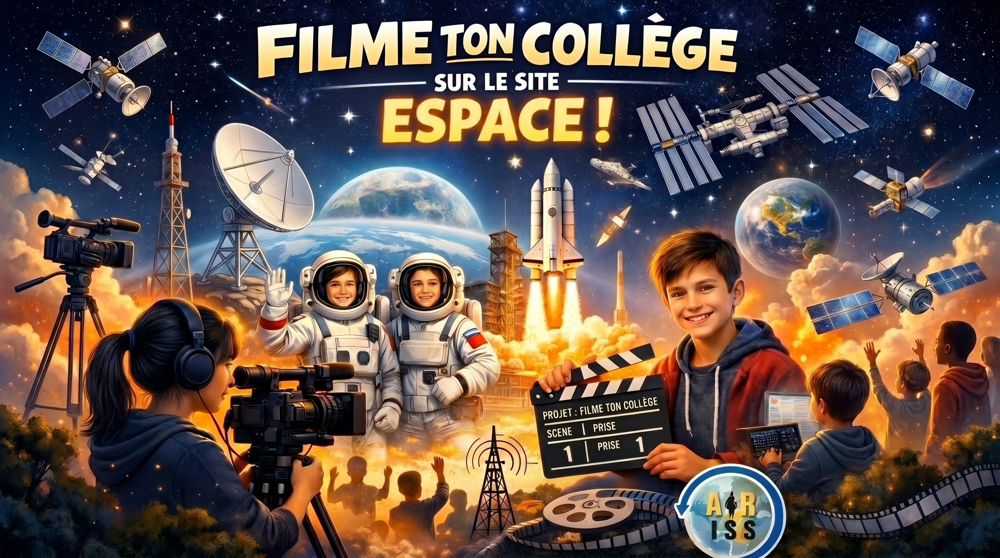

Ici, vous trouverez tous nos projets.
Nous avons la chance d'assister à l'événement ARISS, pour cet événement, il a été demandé de présenter le collège. Et quoi de mieux qu'une vidéo réalisée par les élèves !? Alors à vos caméras, prêts ? Filmez !
🎬 Cliquez sur l'image pour lancer le film

Cette année, en classe espace, nous allons réaliser de nombreux projets dont vous trouverez la liste ci-dessous.
- Programmation d'animations ou de différents détecteurs.
- Modélisation 3D sur le site Tinkercad, puis nous l'imprimerons avec la magnifique imprimante Creality.
Nous réaliserons un échange en direct avec la station spatiale internationale pour parler à Sophie Adenot.